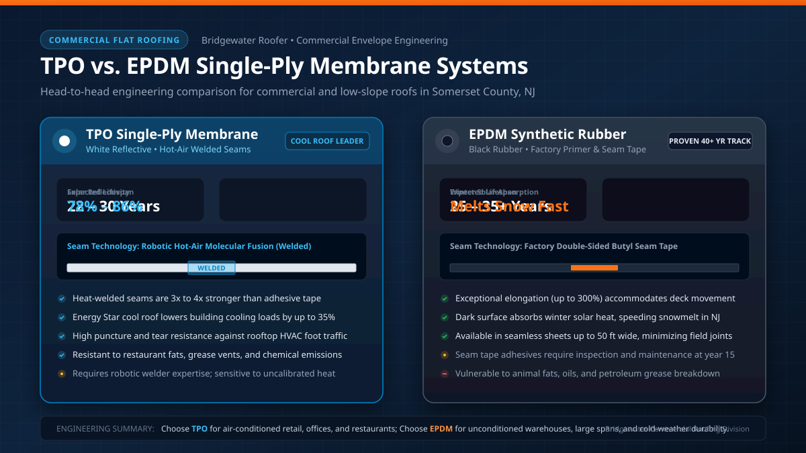

Key Takeaways for Property Owners
- Seam Technology Matters Most: TPO seams are molecularly fused with 900°F hot air, creating welded joints 3x stronger than tape. EPDM uses butyl adhesive tape, which performs reliably but requires seam inspection after 15 years.
- Cool Roof Energy Savings: White TPO reflects 78% to 86% of solar radiation, reducing summer air conditioning electric bills by up to 35% on air-conditioned commercial spaces.
- Winter Solar Gain: Black EPDM absorbs winter solar heat, reducing heating costs and accelerating snowmelt on unconditioned industrial facilities and warehouses.
- Chemical and Grease Resilience: TPO is immune to rooftop animal fats and restaurant hood exhaust. EPDM rubber degrades rapidly when exposed to oils.
- Thermal Expansion Flexibility: EPDM elongates up to 300% without tearing, making it ideal for buildings with significant structural settling or long unsupported spans.

Quick Answer: When to Choose TPO vs. EPDM
Choose TPO (Thermoplastic Polyolefin) if your property is an air-conditioned retail strip, corporate office, school, or restaurant in Somerset County. TPO’s brilliant white surface deflects scorching summer heat, and its hot-air welded seams provide unmatched defense against water intrusion and rooftop grease.
Choose EPDM (Ethylene Propylene Diene Monomer) if your facility is an unconditioned warehouse, distribution center, or factory where winter heating efficiency and snowmelt are priorities. EPDM is also favored for large unbroken roof decks where wide 50-foot sheets minimize field seams, and for budget-conscious low-slope residential patio covers.
Comprehensive Head-to-Head Comparison Table
The table below contrasts 60-mil TPO and 60-mil EPDM single-ply membranes based on regional installation metrics across Central New Jersey:
| Performance Factor | White TPO Membrane | Black EPDM Rubber |
|---|---|---|
| Installed Cost (Per Sq Ft) | $6.75 – $9.50 / sq ft | $6.50 – $9.00 / sq ft |
| Expected Lifespan in NJ | 22 – 30 Years | 25 – 35+ Years |
| Seam Joining Method | Hot-Air Welded (Molecular Fusion) | Primer & Double-Sided Butyl Seam Tape |
| Seam Peel Strength | 55 – 80 lbs/in (Fails at membrane, not seam) | 15 – 25 lbs/in (Adhesive dependent) |
| Solar Reflectance (Initial) | 78% – 86% (Energy Star Qualified) | 5% – 10% (High heat absorption) |
| HVAC Energy Savings | High summer cooling savings (15%–35%) | Modest winter heating penalty reduction |
| Resistance to Grease / Oils | Excellent (Ideal for restaurant exhaust) | Poor (Swells and dissolves quickly) |
| Cold Weather Flexibility | Flexible down to -40°F | Exceptional flexibility down to -60°F |
| Track Record History | ~30 Years (Continuously improved formulations) | 50+ Years (Extensive empirical field data) |
Seam Technology: The Critical Failure Point in Flat Roofs
Over 90% of flat roof leaks occur at seams, curbs, and penetrations rather than through the center of the membrane sheet. How the seams are bonded is the single most important technical difference between TPO and EPDM:
TPO: Robotic Hot-Air Molecular Fusion
TPO is a thermoplastic polymer. During installation, certified crews use robotic hot-air welding equipment that blows compressed air heated to 900°F–1,000°F between the overlapping sheets while weighted silicone rollers apply uniform pressure. This process temporarily melts the polymer chains together. As it cools, the two sheets fuse into a single monolithic layer. In peel tests, the weld is so tenacious that the membrane itself tears before the seam separates.
EPDM: Primer and Factory Butyl Seam Tape
EPDM is a thermoset synthetic rubber that cannot be melted or welded once vulcanized at the factory. Seams are joined using solvent-based primer followed by double-sided butyl tape. While modern peel-and-stick seam tapes perform dramatically better than the liquid contact adhesives of the 1980s, the bond remains a mechanical and chemical adhesive joint. Over 15 to 20 years of New Jersey freeze-thaw cycles and ponding water exposure, tape adhesives gradually lose elasticity and require targeted maintenance.
Engineering Tip: Membrane Thickness (Mil Rating)
Whether specifying TPO or EPDM, we strongly recommend 60-mil (0.060 inches) or 80-mil thickness over entry-level 45-mil membranes. The modest 10% to 15% material upcharge yields 40% greater puncture resistance against HVAC maintenance technicians, dropped tools, and hail impact.
Need a Commercial Flat Roof Evaluation in Somerset County?
Our commercial division performs core cut sampling, infrared moisture scans, and provides side-by-side TPO and EPDM proposals with manufacturer NDL warranties.
Somerset County Applications: Which Fits Your Property?
1. Retail Centers & Professional Offices (Route 22 & Route 202/206)
For shopping plazas, medical suites, and corporate office parks, TPO is the clear winner. Its white reflective surface reduces rooftop temperatures by up to 60°F on hot August days. This prevents rooftop packaged HVAC units from running continuously at maximum capacity, significantly extending equipment lifespan and trimming thousands off summer electric bills.
2. Warehouses & Distribution Facilities (Bound Brook & Raritan Corridors)
For large industrial warehouses with unconditioned or minimally heated interiors, EPDM is frequently the preferred system. Available in wide 50-foot rolls that cover football-field-sized decks with minimal joints, black EPDM absorbs winter solar heat, assisting interior heating and helping heavy snow blankets melt off faster through interior roof drains.
3. Restaurants and Food Service Buildings
Rooftop kitchen exhaust fans inevitably vent vaporized grease, cooking oil, and animal fats onto surrounding roof areas. EPDM must never be installed near restaurant vents, as animal fats rapidly liquefy rubber compounds, causing catastrophic structural leaks within months. TPO offers natural chemical and grease resistance.
4. Residential Low-Slope Porches and Sunroom Additions
When a homeowner in Bridgewater or Basking Ridge builds a low-pitch sunroom or wrap-around porch with a slope under 2:12, shingles cannot legally be installed under the New Jersey Uniform Construction Code. Either white TPO or gray/black EPDM can be installed, often concealed behind decorative aluminum fascia or matched with upper shingle roofs.
Ponding Water: How TPO and EPDM Handle Standing Rain
Under the International Building Code (IBC) and NRCA guidelines, flat roofs must be designed with positive slope (minimum 1/4" per foot) to drain all standing water within 48 hours. However, in older Somerset County commercial buildings, structural roof deck deflection can create localized puddles.
- TPO: Because seams are hot-air welded into a continuous plastic sheet, TPO handles temporary ponding water exceptionally well without adhesive dissolution. However, dirty standing water can leave a silt ring that reduces solar reflectivity if not rinsed periodically.
- EPDM: While vulcanized rubber is completely waterproof, persistent long-term ponding over taped seams accelerates adhesive breakdown, especially in summer when standing puddle water reaches temperatures exceeding 130°F.
Sources & Authoritative References
- National Roofing Contractors Association (NRCA): NRCA Roofing Manual: Membrane Roof Systems (TPO & EPDM).
- Single Ply Roofing Industry (SPRI): Technical Reports on Thermoplastic Polyolefin (TPO) and Thermoset (EPDM) Performance.
- Cool Roof Rating Council (CRRC): Solar Reflectance Index (SRI) Directory for Single-Ply Membranes.
- Carlisle SynTec Systems: Sure-Weld TPO vs. Sure-Seal EPDM Design Guide.
- New Jersey Uniform Construction Code (UCC): N.J.A.C. 5:23 Commercial Building Subcode — Roof Drainage & Insulation R-Values.
Dave Collins inspected and approved this guide on September 30, 2026, verifying that all seam peel strengths, CRRC solar reflectance ratings, and commercial code references adhere to current New Jersey building standards.
Frequently Asked Questions
Installed costs for mechanically attached 60-mil TPO and 60-mil EPDM are very similar in Somerset County, typically ranging from $6.50 to $9.50 per square foot. However, TPO delivers ongoing utility savings of 15% to 30% on summer air conditioning for climate-controlled buildings due to its high solar reflectance.
TPO seams are heat-welded using robotic hot-air equipment that fuses the thermoplastic membrane together at over 900°F, creating a monolithic molecular bond stronger than the sheet itself. EPDM seams are adhered using primer and double-sided butyl seam tape, which relies on chemical adhesion and requires periodic inspection after 15 to 20 years.
Both membranes are impervious to water; however, the National Roofing Contractors Association (NRCA) and building codes require positive drainage that eliminates standing water within 48 hours. Continuous ponding degrades seam adhesives over time and promotes biological growth.
Yes. Low-slope residential sections—such as mid-century flat roofs, sunroom additions, second-story walk-out balconies, and shallow front porches—frequently use TPO or EPDM because standard shingles cannot be installed on pitches below 2:12.
TPO is vastly superior for restaurants and commercial kitchens. Animal fats and petroleum grease quickly soften, swell, and dissolve EPDM rubber, causing catastrophic leaks around exhaust fans. TPO is naturally resistant to oils and chemicals.